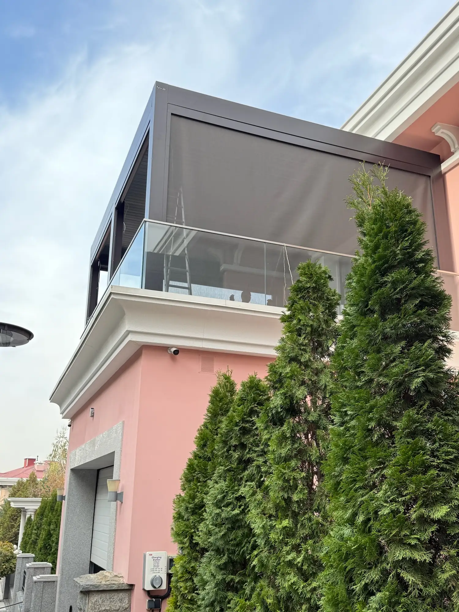
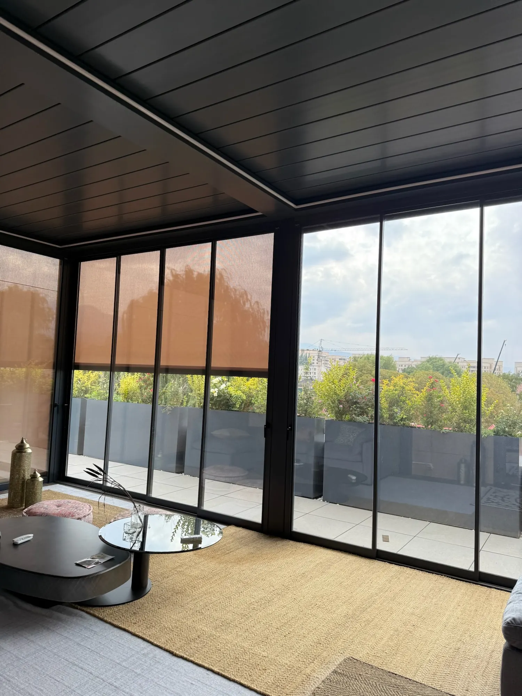

ZIP-шторы используют на террасах, в перголах и существующих проёмах. Перед установкой важно обсудить назначение системы, подготовку места и комплектацию. Начните с понятного сценария: как вы хотите пользоваться пространством?
Что изменится на террасе
Расскажите специалисту, зачем вам нужен тканевый экран. Это поможет подобрать ткань и комплектацию под конкретную задачу.
ZIP-системы снижают воздействие солнца и ветра, добавляют приватности. Они также помогают защитить пространство от насекомых, пыли и осадков — в зависимости от условий эксплуатации.


Два вопроса, которые стоит решить заранее
Для установки необходимо предусмотреть вывод электричества и прочное основание для крепления. До подготовительных работ согласуйте их с компанией применительно к выбранной системе.
Электропитание
Обсудите вывод электричества для выбранного решения. Подготовка должна соответствовать согласованной комплектации.
Прочное основание
Покажите специалисту существующий проём. Если потребуется усиление или подготовка основания, IGS Outdoor может выполнить эти работы.
Подготовка не обязательно ложится на вас
Сообщите, что уже готово на объекте, а какие работы ещё предстоят. Компания поможет связать подготовку проёма с выбранной системой.
- 01
Покажите место установки
Пришлите фото, видео и предполагаемые размеры. Укажите, речь о перголе или существующем проёме.
- 02
Обсудите точный замер и визуализацию
IGS Outdoor выполняет выезд специалиста на точный замер. Предварительная визуализация поможет обсудить выбранное решение.
- 03
Согласуйте подготовительные работы
Компания может усилить проём и подготовить основание. Заранее уточните состав работ и что нужно обеспечить со своей стороны.
Короткий список для консультации
- Назначение террасы и главная задача экрана.
- Предполагаемые размеры, фото и видео проёма.
- Состояние основания и подготовка электропитания.
- Желаемая светопроницаемость ткани и автоматическое управление.
- Состав подготовительных работ и окончательная комплектация.
Можно выбрать ткань с подходящей светопроницаемостью и автоматическое управление. Если планируется интеграция в перголу, обсудите её вместе с остальным решением.
Посмотреть ZIP-системыЧастые вопросы
Можно ли установить ZIP-систему в существующий проём?
Да, ZIP-систему можно установить в существующий проём. Возможность и подготовительные работы уточняют для конкретного места установки.
Что делать, если основание ещё не подготовлено?
Сообщите об этом специалисту до установки. Мы можем подготовить основание и усилить проём.
Нужна ли предварительная визуализация?
IGS Outdoor может подготовить предварительную визуализацию выбранного решения. Обсудите её на этапе подбора вместе с замером и комплектацией.